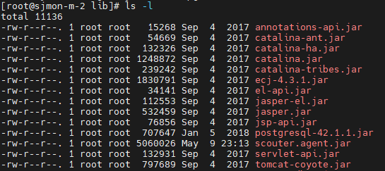
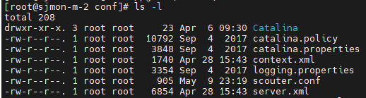
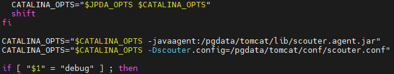
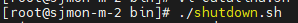

APM Agent Installation Tomcat Monitoring
1. Agent 설치
Manager의 설치 위치 아래 scouter/agent.java/ scouter.agent.jar 파일을 임의의 디렉토리에 copy 합니다.
(ex. /pgdata/tomcat/lib)

Manager의 설치 위치 아래 scouter/agent.java/conf/ scouter.conf 파일을 임의의 디렉토리에 copy 합니다.
(ex. /pgdata/tomcat/conf)

2. config 파일 수정
scouter.conf 파일을 아래와 같이 수정합니다.
| 설정 항목 | 설정값 |
|---|---|
| 어플리케이션명 (Default: tomcat1) | obj_name=SIS_WAS_DEV |
| Scouter 서버 IP | net_collector_ip=172.16.30.87 |
| Scouter 서버 Port (Default: 6100) | net_collector_udp_port=6100 |
| net_collector_tcp_port=6100 | |
| 서비스 연계 추적 활성화 여부 | trace_interservice_enabled=true |
3. tomcat의 catalina.sh 수정
${TOMCAT_HOME}/bin/catalina.sh 파일을 수정합니다.
아래와 같이 scouter.agent.jar 위치와 scouter.conf 위치를 적어줍니다.
CATALINA_OPTS="$CATALINA_OPTS -javaagent:/pgdata/tomcat/lib/scouter.agent.jar"
CATALINA_OPTS="$CATALINA_OPTS -Dscouter.config=/pgdata/tomcat/conf/scouter.conf"

4. tomcat재시작
tomcat을 재시작 합니다
- ./shutdonw.sh 실행하여 tomcat을 종료합니다

- ./startup.sh 실행하여 tomcat을시작합니다